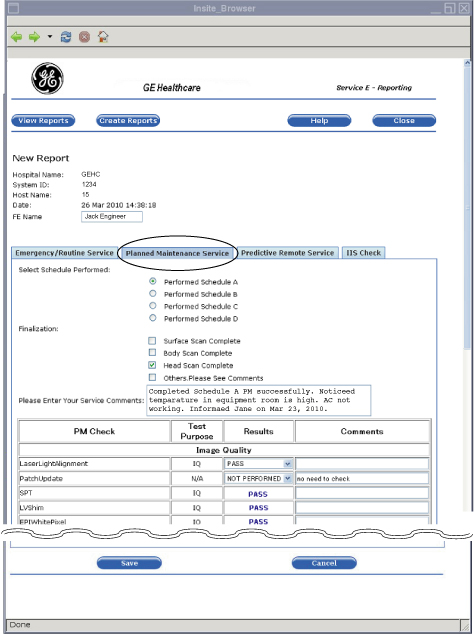
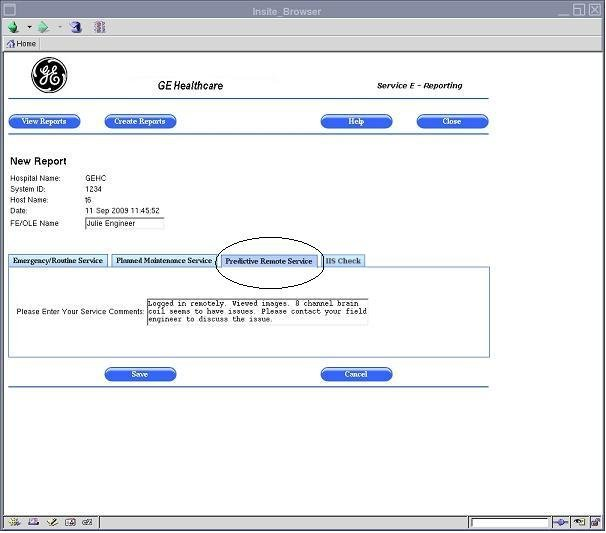
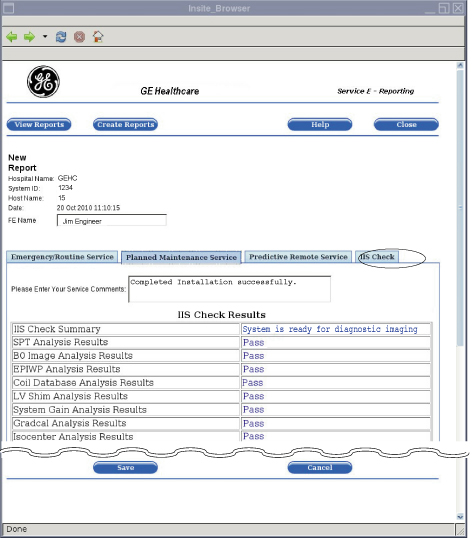

Operating Documentation
Direction 5670006, Rev# 1
Module Version 1.0, Version Date 8/4/11
Operating Documentation |
Insert the Service Key in the host computer USB port (this applies to the FE or OLE, not the customer). The service key is needed to access the MR Service Desktop Browser.
Click [Service Desktop Manager] and select [Service Browser] from the Service Desktop Manager window. The Common Service Desktop home page opens. This home page (see Illustration 1) is the FE Cockpit top-level page.
Click the E-Reporting link on the FE Cockpit Home Page (see Illustration 1). The E-Reporting View Service Reports page is displayed (see Illustration 2).
When the E-Reporting Tool is opened, a list of reports automatically displays (for reports that were already created).
Open the View Service Reports page (see Opening the E-Reporting Tool).
A list of Unread reports is shown at the top of the page, and a list of Read reports is shown at the bottom of the page. When a service engineer creates a report, it goes to the Unread list. When a customer opens the report, it moves to the Read list (see Illustration 2).
A service engineer can view a particular report by clicking the View link for that report.
Open the View Service Reports page (see Opening the E-Reporting Tool).
Click the View link for the report you want to view (see Illustration 3). The corresponding report is displayed (see Illustration 4).
To create each of the three service reports, see the procedures below.
A service engineer can create an Emergency/Routine Service Report. This report contains the information shown in Illustration 5.
Open the View Service Reports page (see Opening the E-Reporting Tool).
Click the [Create Reports] button at the top of the page (see Illustration 5).
Click the [Emergency/Routine Service] tab to create this type of report (this tab is the default so it may already be selected, as shown in Illustration 6).
Enter the following information for the report:
Click the [Save] button at the bottom of the page.
A service engineer can create a Planned Maintenance Service Report. This report contains the information shown in Illustration 7.
Illustration 7: Planned Maintenance Service Report

Open the View Service Reports page (see Opening the E-Reporting Tool).
Click the [Create Reports] button at the top of the page ( see Illustration 5).
Click the [Planned Maintenance] tab to create this type of report (see Illustration 7).
Enter the following information for the report:
Click the [Save] button at the bottom of the page.
A service engineer can create a Predictive Maintenance Service Report. This report contains the information shown in Illustration 8.
Illustration 8: Predictive Maintenance Service Report

Open the View Service Reports page (see Opening the E-Reporting Tool).
Click the [Create Reports] button at the top of the page (see Illustration 5).
Click the [Predictive Remote Service] tab to create this type of report (see Illustration 8).
Enter service comments for the report.
Click the [Save] button at the bottom of the page.
A service engineer can create a IIS Check Service Report. This report contains the information shown in Illustration 9.
Illustration 9: IIS Check Service Report

Open the View Service Reports page (see Opening the E-Reporting Tool).
Click the [Create Reports] button at the top of the page (see Illustration 5).
Click the [IIS Check] tab to create this type of report (see Illustration 9).
Enter service comments for the report.
IIS Check Results are shown in the field.
Click the [Save] button at the bottom of the page.
A service engineer can print a specific report by opening it and printing it. The service report is displayed as a PDF file for printing purposes. The report is printed using either the:
XPDF tool on the local system, which is a Linux version of PDF, or
Adobe Acrobat when accessed remotely through the Integrated Service Desktop (ISD)
| NOTE: | To print a service report, a network printer needs to be configured on the scanner. This printer must be set up to print from Adobe Acrobat, Adobe Reader, or a similar PDF program. |
Open the View Service Reports page (see Opening the E-Reporting Tool).
Click the View link for the report you want to print (see Illustration 10). The corresponding report is displayed in the View Report page (see Illustration 11).
Click the Print button at the bottom of the View Report page (see Illustration 11).
If you print locally from the system, an XPDF page displays (see Illustration 12 ). Click the Printer icon in the toolbar at the bottom of the XPDF page to print.
If you print remotely from the Integrated Service Desktop (ISD), an Adobe Acrobat page or similar PDF reader program displays (see Illustration 13 and Illustration 14). To print:
A service engineer can edit a specific report by clicking the Edit link for that report. An FE can edit only an unread report.
| ||||
| Make sure to state the facts, not hypothesis, when editing a report. | ||||
Open the View Service Reports page (see Opening the E-Reporting Tool).
Click the Edit link for the report you want to edit (see Illustration 15). The corresponding report opens (see Illustration 16).
Enter your changes in the report.
Click the [Save] button at the bottom of the page.
A service engineer can add comments to a specific report by clicking the Add Comments link for that report. An FE can only add comments to a read report. After adding the comments, the report is moved to the "Unread" section.
| ||||
| Make sure to state the facts, not hypothesis, when adding comments to a report. | ||||
Open the View Service Reports page (see Opening the E-Reporting Tool).
Click the Add Comments link for the report to which you are adding comments (see Illustration 17). The corresponding report opens (see Illustration 18).
In the Comments box, type comments.
Click the [Save] button at the bottom of the page.
A service engineer can export a report to media, such CD, DVD, or USB drive. The report is exported as a PDF file.
Open the View Service Reports page (see Opening the E-Reporting Tool).
Click the check box for the report you want to export (see Illustration 19). Placing a check mark in the check box will select the report.
Insert the CD, DVD, or USB to which you are exporting the report. Make sure to insert the media in the proper port/drive for the computer.
Click the [Export] button at the bottom of the page (see Illustration 19).
Select the type of media to which you are exporting the report, such as CD.
Click [OK].
A service engineer can delete a specific report by clicking the Delete link for that report. An FE can delete only an unread report.
Open the View Service Reports page (see Opening the E-Reporting Tool).
Click the Delete link for the report you want to delete (see Illustration 21).
Click [OK] .